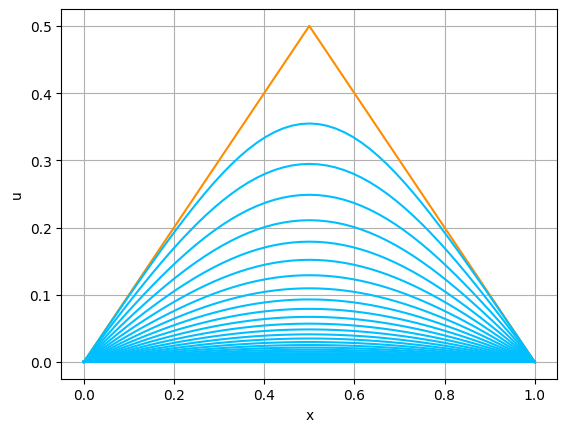
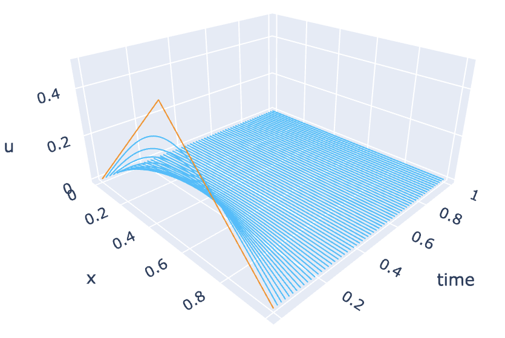

2024-3A 数理情報学（東京大学教養学部） [齊藤宣一] [top] [A] [B] [C] [UTOL]
PythonやGoogle Google colaboratoryに不慣れな人は，先に次を勉強することを勧めます： Pythonを用いた数値計算の基礎
一様な材質でできた，長さが $L$ の針金の熱伝導現象は，次の偏微分方程式で記述される： \begin{equation} \tag{A.1a} \frac{\partial u}{\partial t}=\kappa \frac{\partial^2 u}{\partial x^2}\qquad (0 < x < L,~ t > 0). \end{equation} ここで，$u=u(x,t)$ は時刻 $t$ における点 $x$ での針金の温度である．また，$\kappa$ は針金の比熱や密度などから定まる正定数である．(A.1a)は，熱伝導方程式，熱拡散方程式，あるいは，単に，熱方程式と呼ばれる．
針金の温度変化を論じるには針金の端点（境界）での物理的な状況設定が必要である． もし，この両端が一定の温度，たとえば，$0$ に保たれているのであれば，$u$ は境界条件 \begin{equation} \tag{A.1b} u(0,t)=0,\quad u(L,t)=0\qquad (t > 0) \end{equation} を満たす．これを，Dirichlet境界条件と呼ぶ．
温度変化の考察を $t=0$ から始めるとすると，この初期時刻での温度分布は既知であるとする必要がある．すなわち，$u$ には初期条件 \begin{equation} \tag{A.1c} u(x,0)=a\qquad (0\le x\le L) \end{equation} が課せられる．ただし，$a=a(x)$ は区間 $[0,L]$ 上で与えられた関数である．特に何も断らなければ，考えている境界条件を満たすような連続関数であるとしておく（実際には，この条件は，それほど本質的ではない）．
当面，熱方程式(A.1a)，Dirichlet境界条件(A.1b)，初期条件(A.1c)からなる，熱方程式の初期値境界値問題(A.1a,b,c)を扱う．
あらためて，Dirichlet境界条件下での熱方程式の初期値境界値問題(A.1a,b,c)を考えよう．$N$ を正の整数として，$\displaystyle{h=\frac{L}{N+1}}$とおき，$x_i=ih$ $(i=0,1,\ldots,N+1)$ と定める．このとき，$x_0=0$，$x_{N+1}=L$であることに注意せよ．次に，正の定数$\tau$ を固定して，$t_n=n\tau$ $(n=0,1,\ldots)$とおく．この格子点の各点 $(x_i,t_n)$ で，初期値境界値問題の解 $u(x_i,t_n)$ の近似値 $u_i^n$ を求めたい．
$\frac{\partial u}{\partial t}(x_i,t_n)$ に前進差分商，$\frac{\partial^2 u}{\partial x^2}(x_i,t_n)$ に2階中心差分商を適用することで， (A.1a)に対する近似方程式として， \begin{equation} \frac{u_i^{n+1}-u_i^n}{\tau}=\kappa \frac{u_{i-1}^{n}-2u_i^{n}+u_{i+1}^n}{h^2}\qquad (1\le i\le N,\ n\ge 0) \tag{A.6a} \end{equation} が得られる．境界条件と初期条件は，単純に， \begin{gather} u_0^n=u_{N+1}^n=0 \qquad (n\ge 1), \tag{A.6b}\\ u_i^0=a(x_i) \qquad (0\le i\le N+1)\tag{A.6c} \end{gather} とする．
(A.6a,b)は， \begin{equation} \tag{A.7} \lambda\stackrel{\textrm{def.}}{=} \kappa \frac{\tau}{h^2} \end{equation} と置くことで， \begin{equation} \tag{A.8} \left\{ \begin{array}{l} u_0^{n+1}=0,\\ u_i^{n+1}=(1-2\lambda)u_i^n+\lambda (u_{i-1}^n+u_{i+1}^n) \qquad (1\le i\le N,n\ge 0),\\ u_{N+1}^{n+1}=0 \end{array} \right. \end{equation} と表現できる．したがって，近似方程式(A.6a,b,c)は，図A.2のような模式図（スキーム，scheme）で表現できる． すなわち．$u_i^{n+1}$ を計算する際には，「その真下の値」$u_i^n$ と「左右の下の値」$u_{i-1}^n,u_{i+1}^n$ を加重平均しているのである．このことから，(A.6a,b,c)のような差分近似から導かれた近似方程式を差分近似スキーム，あるいは，差分スキームと呼ぶ．特に，(A.6a,b,c)を陽的差分スキーム（explicit finite difference scheme），あるいは単に，陽的スキーム，陽的解法と呼ぶ．
注意. $h=L/(N+1)$ としているのは， $1\le i\le N$ に対して，$x_i$ を 区間 $[0,L]$ の内点にするためである． 結果的に，各 $t_n$ $(n\ge 1)$ に対して，$u_i^n$ $(1\le i\le N)$ が求めるべき未知数となる． $h=L/N$ とした場合には，$0=x_0 < x_1 < \cdots < x_{N-1} < x_{N}=L$ となり， $u_i^n$ $(1\le i\le N-1)$ が求めるべき未知数となる．実際のところ，陽的スキームを考える限りは，$h=L/(N+1)$ と定める恩恵は，さほどではない．あくまで，個人的な好みの問題であるので，$h=L/N$ としたい人は，（その定義に合わせて，しかるべく修正して）そのようにしても良い．
実際に，(A.6a.b.c)を計算してみよう．この節で使う予定のモジュールをすべてインポートしておく．
In [1]: import numpy as np import matplotlib.pyplot as plt from matplotlib import animation, rc from IPython.display import HTML import plotly.graph_objects as go import plotly.offline as pyo
(A.6a,b,c)を計算する関数を作成する． ただし，時間区間については，$0\le t\le T$ で考えるものとする． 次は，関数を実行する際に，ユーザが指定するものである：
$\mathrm{xgrid}=(x_0,x_1,\ldots,x_{N+1})\in\mathbb{R}^{N+2}$ とする． 「現在時刻」における $u_n^i$ を記憶する配列として， $\mathrm{u}=(u_0^n,u_1^n,\ldots,u_{N+1}^n)\in\mathbb{R}^{N+2}$ を導入する．すると， \[ \mathrm{u[1\mbox{:}N+1]}=(u_1^n,\ldots,u_{N}^n),\quad \mathrm{u[0\mbox{:}N]}=(u_0^n,\ldots,u_{N-1}^n),\quad \mathrm{u[2\mbox{:}N+2]}=(u_2^n,\ldots,u_{N+1}^n) \] であるから，(A.6a,b,c)，すなわち，(A.8)の更新式は， \[ \mathrm{u[1\mbox{:}N+1]}=(1-2\cdot \mathrm{lam})\cdot \mathrm{u[1\mbox{:}N+1]} +\mathrm{lam}\cdot(\mathrm{u[0\mbox{:}N]}+\mathrm{u[2\mbox{:}N+2]}) \] とすれば良い．ここで，右辺の $\mathrm{u[1\mbox{:}N+1]}$ などは， $(u_1^n,\ldots,u_{N}^n)$ などを， 左辺の $\mathrm{u[1\mbox{:}N+1]}$ は，$(u_1^{n+1},\ldots,u_{N}^{n+1})$ を意味することに注意せよ．
その上で，$\mathrm{tgrid}=(t_0,t_{\mathrm{step}},t_{2\mathrm{step}},\ldots,t_{\mathrm{num}\cdot\mathrm{step}})\in\mathbb{R}^{\mathrm{num}+1}$，および， \[ \mathrm{sol}= \begin{pmatrix} u_0^0 & u_1^0 & \cdots & u_N^0 & u_{N+1}^0 \\ u_0^{\mathrm{step}} & u_1^{\mathrm{step}} & \cdots & u_N^{\mathrm{step}} & u_{N+1}^{\mathrm{step}} \\ \vdots & \vdots & & \vdots & \vdots\\ u_0^{\mathrm{num}\cdot\mathrm{step}} & u_1^{\mathrm{num}\cdot\mathrm{step}} & \cdots & u_N^{\mathrm{num}\cdot\mathrm{step}} & u_{N+1}^{\mathrm{num}\cdot\mathrm{step}} \end{pmatrix} \in\mathbb{R}^{(\mathrm{num}+1)\times (N+2)} \] と定める．関数の計算結果としては， $\mathrm{xgrid}$，$\mathrm{tgrid}$，$\mathrm{sol}$ を返す．
以上を行う関数が，In [2]に示した heat_0dbc_ex1 である．
In [2]:
#（斉次）熱方程式、零Dirichlet境界条件、陽的スキーム
def heat_0dbc_ex1(L, kappa, initial, N, T, lam, num):
h = L/(N+1)
tau = lam*h*h/kappa
nmax = int(T/tau)
step=int(max(1, nmax/num))
xgrid=np.linspace(0.0, L, N+2)
tgrid=np.array([0.0])
u=np.vectorize(initial)(xgrid)
sol=np.copy(u)
for n in range(nmax):
u[1:N+1] = (1-2*lam)*u[1:N+1]+lam*(u[0:N]+u[2:N+2])
tnow = (n+1)*tau
if (n+1)%step==0:
sol=np.vstack((sol,u))
tgrid=np.append(tgrid, tnow)
return xgrid, tgrid, sol
次に可視化のために，関数を3つ用意する．
In [3]:
#図のプロット、一枚の図に、グラフを重ねる
def plot_solution(xgrid, uvect):
# 描画に関するパラメータの設定
umax = np.max(sol)
umin = np.min(sol)
ulength = umax - umin
umax += 0.05 * ulength
umin -= 0.05 * ulength
# t = 0
plt.plot(xgrid,uvect[0,:],color='#ff8c00')
# t > 0
for n in range(1,uvect.shape[0]):
plt.plot(xgrid,uvect[n,:],color='#00bfff')
plt.xlabel('x')
plt.ylabel('u')
plt.ylim(umin, umax)
plt.grid('on')
plt.show()
In [4]:
# xtu空間での曲線の描画
# plotly.graph_objects，plotly.offline モジュールを使う
# xgrid.shape <= tgrid.shape でないと上手く描けない
def plot_solution3d(xgrid, tgrid, uvect):
# 3Dプロットの作成
fig = go.Figure()
Nt = tgrid.shape[0]
# t = 0
n = 0
tval = tgrid[n]*np.ones(Nt)
fig.add_trace(go.Scatter3d(x=xgrid, y=tval, z=uvect[n,:], mode='lines',line=dict(color='#ff8c00', width=2)))
# t > 0
for n in range(1, Nt):
tval = tgrid[n]*np.ones(Nt)
fig.add_trace(go.Scatter3d(x=xgrid, y=tval, z=uvect[n,:], mode='lines',line=dict(color='#00bfff', width=2)))
# レイアウトの設定
fig.update_layout(scene=dict(xaxis_title='x', yaxis_title='time', zaxis_title='u'))
fig.update_layout(scene=dict(camera=dict(eye=dict(x=1.5, y=-1.5, z=1))))
fig.update_layout(showlegend=False)
# プロットの表示
pyo.plot(fig)
with open('temp-plot.html', 'r') as file:
html_content = file.read()
display(HTML(html_content))
# Google Colaboratoryでなければ、上の4行は、以下の1行で置き換えられる（はず）
# fig.show()
In [5]:
#アニメーションの作成
# IPython.displayモジュールを使う
def plot_animation(xgrid, tgrid, uvect):
# 描画に関するパラメータの設定
umax = np.max(sol)
umin = np.min(sol)
xmax = np.max(xgrid)
xmin = np.min(xgrid)
ulength = umax - umin
utop = umax + 0.1*ulength
umax += 0.05*ulength
umin -= 0.05*ulength
xmid = (xmax+xmin)/2
xlength = xmax - xmin
xmax += 0.05*xlength
xmin -= 0.05*xlength
# fig, axオブジェクトを作成
fig, ax = plt.subplots()
ims = []
# t = 0
n = 0
im, = ax.plot(xgrid, uvect[n, :], color='#ff8c00')
title = ax.text(xmid, utop, f'time={tgrid[n]:.4f}', ha='center', va='center', fontsize=15)
ims.append([im, title])
# t > 0
for n in range(1, uvect.shape[0]):
im, = ax.plot(xgrid, uvect[n, :], color='#00bfff')
title = ax.text(xmid, utop, f'time={tgrid[n]:.4f}', ha='center', va='center', fontsize=15)
ims.append([im, title])
# 各軸のラベル
ax.set_xlabel(r"$x$", fontsize=15)
ax.set_ylabel(r"$u$", fontsize=15)
# グラフの範囲を設定
ax.set_xlim([xmin, xmax])
ax.set_ylim([umin, umax])
ax.grid(True)
# ArtistAnimationにfigオブジェクトとimsを代入してアニメーションを作成
return animation.ArtistAnimation(fig, ims)
これらを，次のIn [6]ように使う．熱方程式に対する差分法の最初の例としては，初期関数として， \[ a(x)=\min \{x ,\ L-x\} \] を用いるのが，慣例になっている． ここでもその慣例に従おう（この関数に対して，配列 $\mathrm{xgrid}$ を渡したときに，同じ次元の配列 $\mathrm{u}$ が返ってくるように，$\mathrm{u}=\mathrm{np.vectorize(initial)(xgrid)}$としている） ．
In [6]:
# 初期値
def initial1(x):
return min(x,1-x)
#パラメータの設定
L = 1.0
kappa = 1.0
N = 51
T = 1.0
lam = 0.4
num = 60
#熱方程式の計算
x, tn, sol = heat_0dbc_ex1(L, kappa, initial1, N, T, lam, num)
#図の表示
plot_solution(x, sol)
#3D図の表示
plot_solution3d(x, tn, sol)
#アニメーションを表示
anim = plot_animation(x, tn, sol)
#結果をheat.gifに保存（Googleドライブをマウントしておくこと！）
anim.save('/content/drive/MyDrive/Colab Notebooks/fig/heat.gif', writer='pillow')
rc('animation', html='jshtml')
plt.close()
anim
|  |  |
|---|
以下では，可視化にはplot_solutionのみを使う．
まずは，$L$，$\kappa$ を固定して，$N$ と $\lambda$ を色々変えて，計算をしてみよ．すると，例えば，$N=23$，$\lambda=0.51$，$T=0.18$として計算してみると，図A.4のようになる．
実は，(A.1)の解 $u$ は，初期関数 $a$ が連続で，$a(0)=a(L)=0$ 満たす限りにおいて， \begin{equation} \tag{A.9} \max_{0\le x\le L}|u(x,t)|\le \max_{0\le x\le L}|a(x)| \qquad (t\ge 0) \end{equation} を満たす（例えば，[藤田1977]の第1章を見よ）．これを，熱方程式の解の $L^\infty$ 安定性という． しかしながら，図A.4では，このような安定性は観察できない．すなわち，図A.4における振動現象は，近似の対象としている微分方程式の解の挙動を反映しているわけではない．
この例から，(A.9)と同様の性質は，陽的スキームの解については，一般には成り立たないことがわかる．それでは，どうすれば良いであろうか？ 実は， 対応する性質の成立を保証するためには，$\lambda$，すなわち，$h$，$\tau$ と $\kappa$ の間に， \begin{equation} \tag{A.10} \lambda\left(=\kappa\frac{\tau}{h^2}\right)\le \frac12 \end{equation} を仮定する必要がある．これは講義で説明した．
In [2]のheat_0dbc_ex1において， $N$ と $\tau$ の値でなく， $N$ と $\lambda$ の値をはじめに指定して，$\tau$ を，$\tau=\lambda h^2/\kappa$ で求めた理由は，(A.10)を容易に成立させるためである．
針金に熱の湧き出しや吸収がある場合には，(A.1a)の代わりに，非斉次の熱方程式， \begin{equation} \tag{A.12} \frac{\partial u}{\partial t}=\kappa \frac{\partial^2 u}{\partial x^2}+f\qquad (0 < x < L,~ t > 0) \end{equation} を考えることになる．ここで，$f=f(x,t)$ は，与えられた関数である． 境界条件(A.1b)と初期条件(A.1c)は同じとする． このときには，(A.6a)を， \begin{equation} \tag{A.13} \frac{u_i^{n+1}-u_i^n}{\tau}=\kappa \frac{u_{i-1}^{n}-2u_i^{n}+u_{i+1}^n}{h^2}+ f(x_i,t_{n}) \qquad (1\le i\le N,\ n\ge 0), \end{equation} すなわち，(A.7)と同じ $\lambda$ を使って， \begin{equation*} u_i^{n+1} = (1-2\lambda)u_i^n+\lambda (u_{i-1}^{n}+u_{i+1}^n)+ \tau f(x_i,t_{n}) \qquad (1\le i\le N,\ n\ge 0) \end{equation*} と変えれば良い．(A.6b,c)はそのまま使える．
In [7]:
#非斉次熱方程式、零Dirichlet境界条件、陽的スキーム
def heat_0dbc_ex2(L, kappa, initial, righthand, N, T, lam, num):
h = L/(N+1)
tau = lam*h*h/kappa
nmax = int(T/tau)
step=int(max(1, nmax/num))
xgrid=np.linspace(0.0, L, N+2)
tgrid=np.array([0.0])
u=np.vectorize(initial)(xgrid)
sol=np.copy(u)
n=0
tnow=n*tau
for n in range(nmax):
u[1:N+1] = (1-2*lam)*u[1:N+1]+lam*(u[0:N]+u[2:N+2]) + tau*righthand(xgrid[1:N+1], tnow)
tnow = (n+1)*tau
if (n+1)%step==0:
sol=np.vstack((sol,u))
tgrid=np.append(tgrid, tnow)
return xgrid, tgrid, sol
$f$ と $a$ を， \begin{equation} \tag{A.14} f(x,t)=e^t(-x^4+x^3+12x^2-6x),\qquad a(x)=x^3(1-x) \end{equation} として計算をしてみよう．結果は，図A.5の通りである． 今度は，解 $u$ は，$0$ に減衰しない．
In [8]: # 初期値 a def initial2(x): return x**3*(1.0 - x) # 右辺の関数 f def righthand2(x, t): return np.exp(t)*(-x**4 + x**3 + 12*x**2 - 6*x) #パラメータの設定 L = 1.0 kappa = 1.0 N = 51 T = 1.0 lam = 0.4 num = 30 #熱方程式の計算 x, tn, sol = heat_0dbc_ex2(L, kappa, initial2, righthand2, N, T, lam, num) #図の表示 plot_solution(x, sol)
次に，$f$ と $a$ を， \begin{equation} \tag{A.15} f(x,t)=f_3(x)=4\pi^2\sin(2\pi x),\qquad a(x)=x(1-x)\sin(4\pi x) \end{equation} として計算をしてみよう．
In [9]: # 初期値 a def initial3(x): return np.sin(4.0*np.pi*x)*x*(1.0 - x) # 右辺の関数 f def righthand3(x, t): return 4.0*np.pi**2*np.sin(2.0*np.pi*x) #パラメータの設定 L = 1.0 kappa = 1.0 N = 51 T = 1.0 lam = 0.4 num = 30 #熱方程式の計算 x, tn, sol = heat_0dbc_ex2(L, kappa, initial3, righthand3, N, T, lam, num) #図の表示 plot_solution(x, sol)
結果は，図A.6の通りである． このとき．数値解は，時間が十分に経過した際に，ある関数 $w=w(x)$ に漸近しているように見える．実際，（各点ごとに）$u(x,t)\to w(x)$ $(t\to\infty)$ を仮定すると，(A.12)と(A.1b)により，$w$ は， \[ 0=\kappa w''+f_3(x),\qquad w(0)=w(1)=0 \] を満たすはずである．したがって，$w(x)=\sin(2\pi x)$ であることがわかる．実際， $u$ が，$t\to\infty$ の際に，$w$ に $[0,1]$ で一様収束することを示すのは難しくない（例えば，[藤田1977]を見よ）．
非斉次熱方程式の初期値境界値問題(A.12)，(A.1b,c)と，その陽的スキーム(A.13)，(A.6b,c)の誤差 $e_i^n = u_i^n - u(x_i,t_n)$ について考察しよう．$\boldsymbol{e}^{(n)}=(e_1^n,\ldots,e_N^n)$ と書く．さらに，$Q=[0,L]\times [0,T]$， \[ \mathcal{M}= \frac{1}{2} \max_{(x,t)\in Q} \left|\frac{\partial^2 u}{\partial t^2}(x,t)\right| +\frac{\kappa}{12}\max_{(x,t)\in Q} \left|\frac{\partial^4 u}{\partial x^4}(x,t)\right| \] とおく．
定理． $T>0$ を任意に固定する． 非斉次熱方程式の初期値境界値問題(A.12)，(A.1b,c)の解 $u$ は，$\mathcal{M}<\infty$ となるほど滑らかであるとする．$\lambda$ について，(A.10)を仮定する． このとき，$u$ と陽的スキーム(A.13)，(A.6b,c)の解 $u_i^n$ の誤差は， \[ \max_{0\le t_n\le T}\|\boldsymbol{e}^{(n)}\|_\infty\le T\mathcal{M}(\tau+h^2) \] を満たす．
上の計算を実験的に確かめてみよう． そのために，(A.14)の $f$ と $a$ を使う．このとき，厳密解は， \[ u(x,t)=e^tx^3(1-x) \] となる．$\tau=\lambda h^2/\kappa$ とするため，誤差の挙動としては，$O(h^2)$ が予想される．
In [10]:
#誤差の計算、非斉次熱方程式、零Dirichlet境界条件、陽的スキーム
def error_heat(L, kappa, initial, righthand, exact, T, lam):
N = 10
num = 200
kmax = 6
hv = np.zeros(kmax)
ev = np.zeros(kmax)
for k in range(kmax):
N = N*2
x, tn, sol = heat_0dbc_ex2(L, kappa, initial, righthand, N, T, lam, num)
err = 0.0
for n in range(tn.shape[0]):
tval = tn[n]
err = max(err, np.linalg.norm(sol[n,:] - exact(x, tval), ord=np.inf))
hv[k] = L/(N+1)
ev[k] = err
rate=(np.log(ev[1:]) - np.log(ev[:-1])) / (np.log(hv[1:]) - np.log(hv[:-1]))
return hv, ev, rate
In [11]:
# 初期値 a
def initial2(x):
return x**3*(1.0 - x)
# 右辺の関数 f
def righthand2(x, t):
return np.exp(t)*(-x**4 + x**3 + 12*x**2 - 6*x)
# 厳密解 u
def exact2(x, t):
return np.exp(t)*(1.0 - x)*x**3
#パラメータの設定
L = 1.0
kappa = 1.0
N = 51
T = 1.0
lam = 0.4
num = 30
#熱方程式の計算
hv, ev, rate = error_heat(L, kappa, initial2, righthand2, exact2, T, lam)
#収束の速さの出力
for i in range(rate.shape[0]-1):
print(f'{hv[i+1]:.3f}, {rate[i]:.3f}')
#結果の描画（両対数目盛）
plt.plot(hv, ev, 'bo-')
plt.xscale('log')
plt.yscale('log')
plt.legend(['explicit'])
plt.xlabel('h')
plt.ylabel('error')
plt.grid('on')
plt.gca().set_aspect('equal', adjustable='box')
plt.show()
Out [11]:
0.024, 1.995
0.012, 1.999
0.006, 2.000
0.003, 2.000
熱方程式の初期値境界値問題(A.1a,b,c)に対して，厳密解を自分で作り，$\lambda=1/6$ のとき， 陽的スキーム(A.6a,b,c)の誤差について調べよ． 可能ならば，観察した事実を，数学的に説明せよ． さらに， 非斉次の場合(A.12)と(A.13)についても同様の観察をせよ．
熱方程式(A.1a)に対して，初期条件(A.1c)と，非斉次のDirichlet境界条件 \[ u(0,t)=1,\quad u(L,t)=0\qquad (t>0) \] を与えた時の初期値境界値問題を考え，差分スキームを導け．また， $t_n\to \infty$ の際の数値解 $u_i^n$ の挙動を観察せよ．